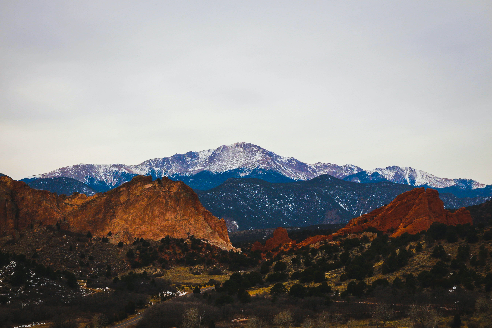
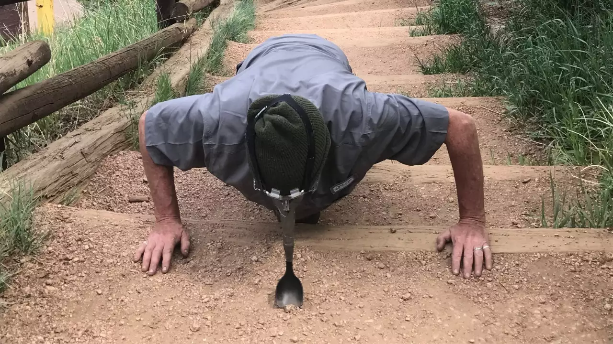
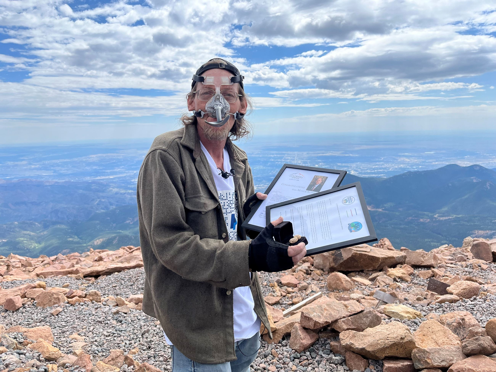
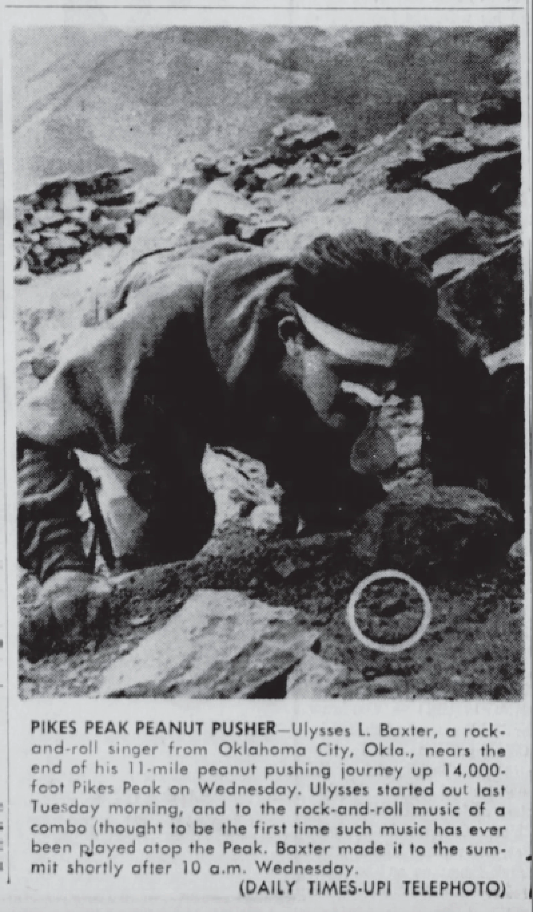

Pikes Peak is a 14,115-foot mountain in the southern Front Range of the Rocky Mountains of North America.
Pikes Peak is the highest summit of the southern Front Range of the Rocky Mountains in North America.
The ultra-prominent 14,115-foot (4,302.31 m) fourteener is located in Pike National Forest,
12 miles (19 km) west of downtown Colorado Springs, Colorado. The town of Manitou Springs lies at its base.
The mountain is named in honor of American explorer Zebulon Pike (though he was unable to reach the summit).
The summit is higher than any point in the United States east of its longitude.
Manitou Springs, Colorado
Manitou Springs, Colorado
Welcome to the home of the Pikes Peak Peanut Pushers.
Manitou Springs is a town located in El Paso County, Colorado, at the base of Pikes Peak.
It is a historic resort town known for its mineral springs, scenic beauty, and laid-back lifestyle.
Founded in the 1880s, Manitou Springs grew as a popular health and recreation destination,
attracting visitors from around the world who sought the therapeutic benefits of its mineral springs.
The town's popularity was further enhanced by its proximity to Pikes Peak, one of Colorado's most iconic peaks,
and by its location at the foot of the Front Range of the Rocky Mountains.
Today, Manitou Springs is a vibrant community that combines its rich history and natural beauty with a thriving arts and culture scene.
It is home to a variety of shops, restaurants, galleries, and other attractions that cater to visitors and locals alike.
The town is also a popular starting point for outdoor adventures, offering easy access to the mountains for hiking, mountain biking,
rock climbing, and other activities.
In conclusion, Manitou Springs is a unique and charming town that combines its rich history,
scenic beauty, and outdoor recreation opportunities with a lively arts and culture scene.
It is a popular destination for visitors from around the world, and a much-loved community for its residents.
The Origin of Peanut Pushing

Almost one hundred years of peanut pushing
While the exact origin of peanut pushing is not known, it is believed to have originated in the 1920s.
The first recorded peanut push was completed by Bill Williams in 1929, who pushed a peanut up Pikes Peak in Colorado.
Bill's feat, which required determination and perseverance, earned him recognition as the first person to push a peanut up Pikes Peak.
The origin of peanut pushing is not well documented and its exact origins are unclear.
However, it is widely believed that the concept of peanut pushing emerged as a way for individuals to test their physical and mental limits.
Pushing a peanut up a mountain with one's nose is a difficult and demanding task, requiring great strength, endurance, and mental fortitude.
As such, it has come to symbolize a unique and entertaining form of adventure and a testament to the human spirit.
Over time, peanut pushing has evolved into a recognized form of endurance challenge, with participants from all walks of life taking on the challenge for personal satisfaction
and a sense of accomplishment. The peanut push has also come to embody a sense of playfulness and a lighthearted approach to adventure,
making it an iconic and much-loved aspect of outdoor culture.
In conclusion, while the exact origin of peanut pushing seems to have manifested from a friendly wager,
it is widely believed to have emerged as a lighthearted and entertaining form of endurance challenge,
representing a testament to the human spirit and a celebration of the power of determination and perseverance.
The Peanut Pushers
Bob Salem

Bob Salem becomes the first to push a peanut with his nose to the summit Pikes Peak in the 21st century.
Bob Salem is known for being one of the participants in the legendary feat of the Peanut Pushers of Pikes Peak.
In , Bob, along with three others, pushed peanuts up the iconic mountain in Colorado using only their noses.
This challenge, which required determination and a good sense of humor, earned Bob and the other participants a place in adventure folklore.
While specific biographical details about Bob Salem are not readily available,
his involvement in the Peanut Pushers of Pikes Peak showcases his love for adventure and his willingness to take on unique and quirky challenges.
His determination and perseverance during the ascent of Pikes Peak serve as an inspiration to others to pursue their dreams and push their boundaries.
Bob Salem's participation in the Peanut Pushers of Pikes Peak serves as a testament to the human spirit and the power of determination and camaraderie.
His story continues to be remembered and celebrated by adventure enthusiasts and serves as a reminder of the importance of never losing sight of one's sense of humor and playfulness.
Tom Miller
Tom Miller, at the time a student at the University of Colorado-Boulder, is reported to have completed a peanut push up Pikes Peak in 1976.
However, specific information about Tom and his alleged peanut push is not readily available.
It is possible that this feat did not receive significant media attention or was not well documented, making it difficult to provide detailed information about his journey.
One
source claims the CU student from Palmer Lake, took four days, 23 hours, 47 minutes,
and three seconds to push a peanut up the Pikes Peak Highway using his nose. In the absence of reliable sources,
it is difficult to confirm the accuracy of these reports and provide a detailed biography of Tom Miller.
Nevertheless, the Peanut Pushers of Pikes Peak continue to inspire people to pursue their dreams and push their boundaries,
and Tom's alleged participation in this iconic challenge serves as a testament to his adventurous spirit and determination.
Ulysses Baxter

New Philadelphia Times, OH, July 18th, 1963 via Newspapers.com
Ulysses Baxter was a legendary figure in the world of adventure and is best known for his record-breaking performance in the Peanut Push up Pikes Peak in Colorado.
In 1963, rock-and-roll musician Ulysses completed the ascent in an impressive eight days, earning him recognition as the most notable person to perform the Peanut Push.
On hands and knees, with a wooden salad spoon affixed to his nose, he ascended Pikes Peak--pushing a peanut the entire way.
The eight-day journey up the mountain, with a peanut in his nose, tested Ulysses's physical and mental limits,
and his ability to overcome adversity has inspired countless others to pursue their own adventures.
Baxter's feat is scarcely remembered today. A plaque that once commemorated his accomplishment no longer hangs in Manitou Springs.
The only evidence of his voyage that remains is a handful of newspaper clippings and the original peanut, which sits in a small display at the Manitou Springs Heritage Center.
Bill Williams
The first Peanut Pusher, Bill Williams of Texas,
accepted a $50 bet in 1929 that he would not be able to push a peanut to the summit of Pikes Peak using only his nose.
On May 19, he started what would become an ordeal and a national sensation at the base of the mountain on the Pikes Peak Highway.
Despite all of his challenges, including an injured knee, Williams made it to the top of Pikes Peak on June 10.
He had traveled 22 miles on his hands and knees up the dirt road over a total of 21 days.
One source claims he had worn out 21 pairs of gloves and used 184 peanuts.
Another source says he wore out 12 pairs of gloves and three pairs of shoes and used 150 peanuts; yet another states he wore out 170 pairs of pants.
Bill's feat not only earned him recognition and a place in adventure folklore but also paved the way for others to attempt similar challenges.
His legacy continues to serve as a reminder of the importance of determination in the pursuit of one's dreams and inspire people to believe in the impossible.
His name will always be remembered as the first person to successfully push a peanut up Pikes Peak.